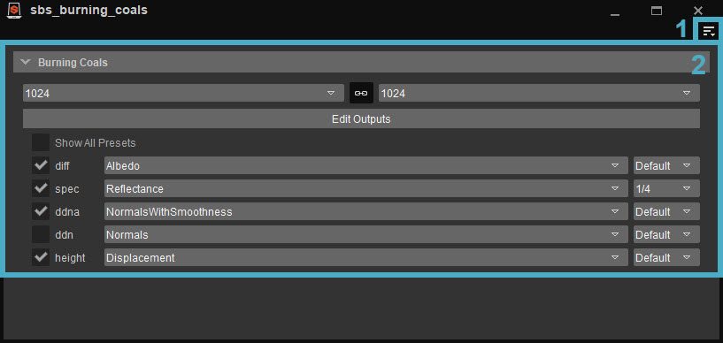
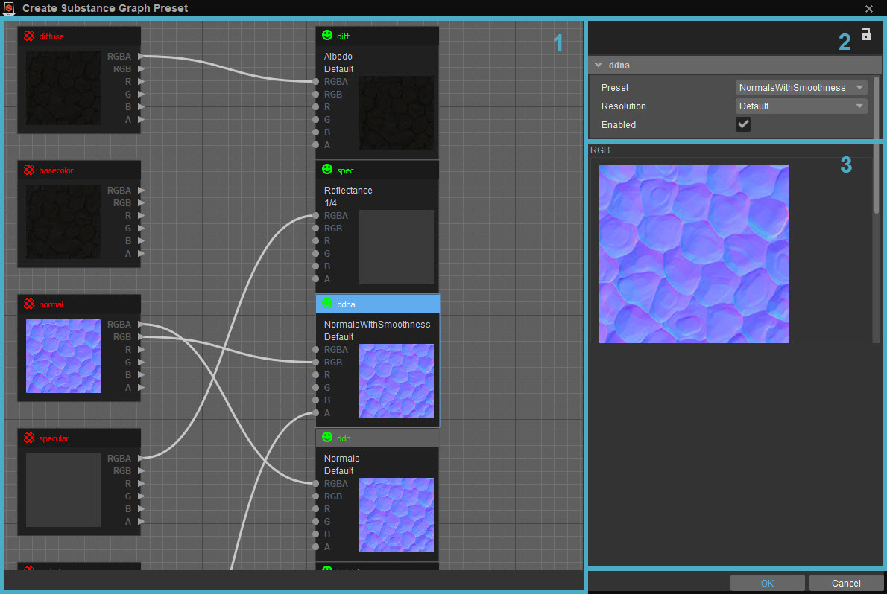
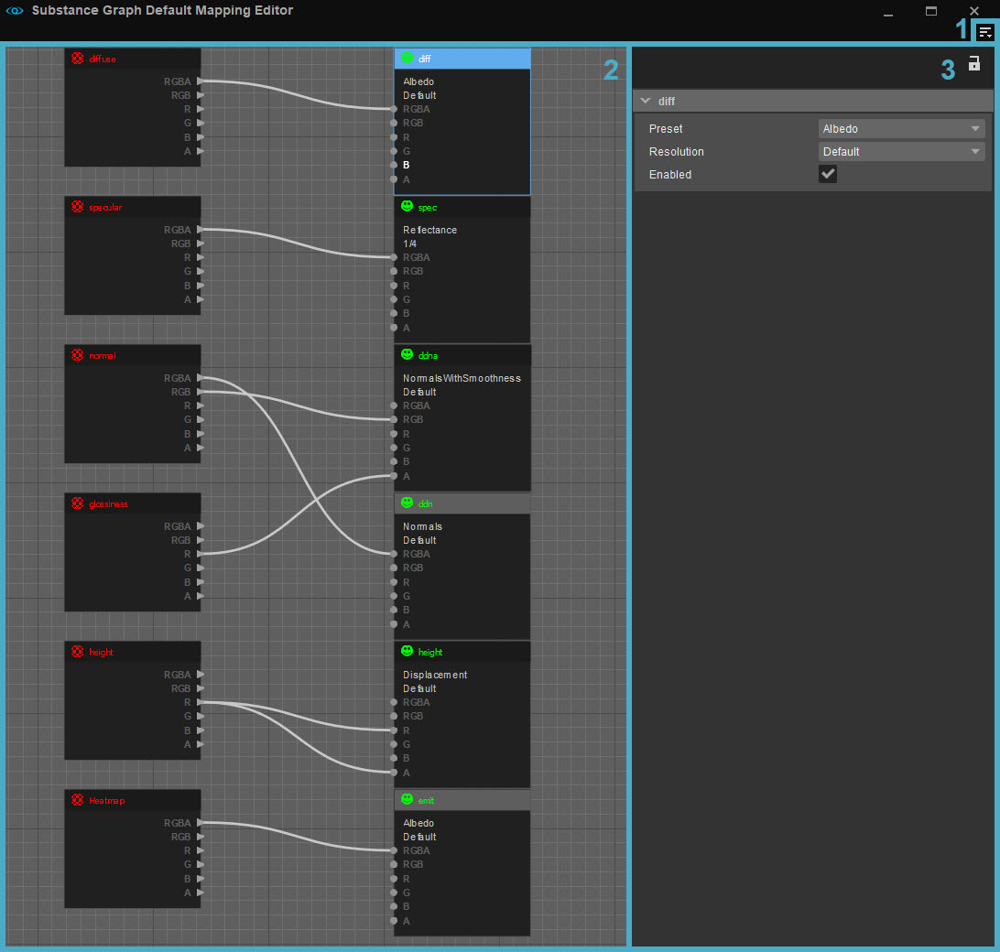
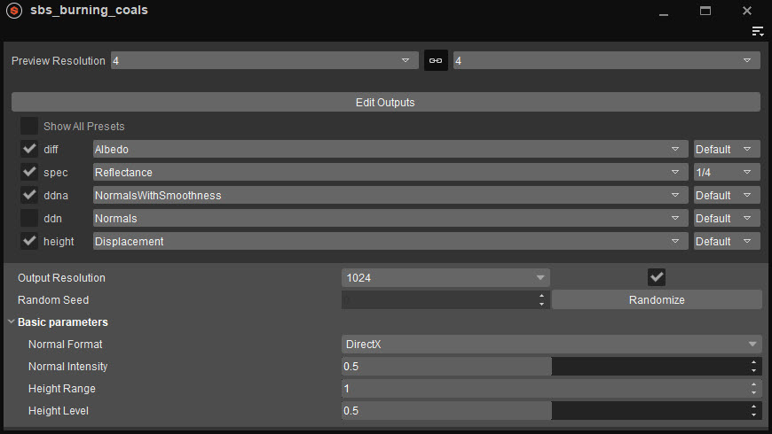
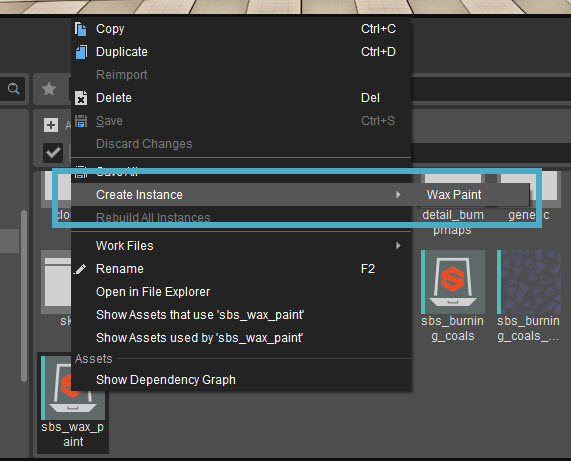
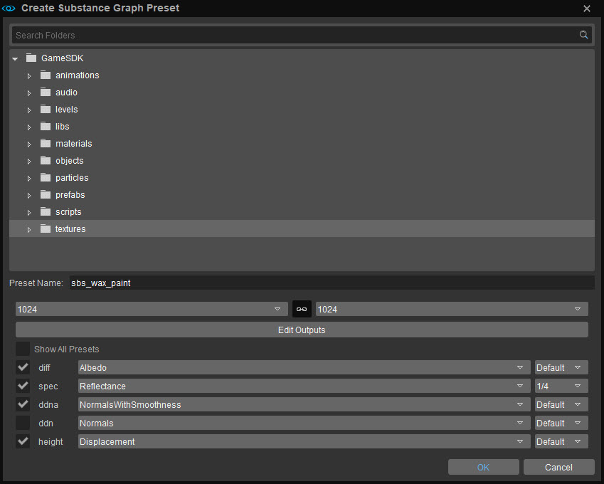

Overview
The Substance tool uses Substance Archive files (*.sbsar) to create Substance Graph instances and generate textures out of them.
Dictionary
Substance Archive: .sbsar file, this file contains all the Substance Graph configurations that come from the Substance Designer.
Substance Graph: Every archive can include several graphs. Every graph can expose several tweakables for appearance modification and also provide output(s) that will later become textures.
Substance Instance: Instance of the graph with modified tweakables and texture output(s) definitions.
The Substance menu (under Tools) has three options: Substance Archive Graph Editor, Substance Graph Default Mapping and Substance Instance Editor.
Substance Archive Graph Editor
In regard to Substance Archives, then the default output settings for all graphs in the archive can be modified. This allows the author of the Substance Archive to pre-define proper outputs from the archive for every Instance generated from archive graphs.
Those settings are saved separately from the default project configuration, so if there is a change in project defaults, the default graph settings will be reflected.
To open the Substance Archive Editor double-click on the Substance Archive icon in the Asset Browser, or alternatively through Tools -> Substance -> Substance Archive Graph Editor, then open the Substance Archive through File -> Open.
Substance Archive files have this icon:
The Substance Archive Graph Editor looks like this:

1. Menu
Accessed via the 
File
| Option | Description |
|---|---|
| Open... | Lets you open a Substance Archive. |
| Close | Closes the previously opened Substance Archive. |
| Save | Lets you save the current Substance Archive. |
| Recent Files | Shows a list of recently opened Substance Archives. |
Toolbars
Option | Description | ||||
|---|---|---|---|---|---|
Customize... | Opens the toolbar customization window allowing users to customize existing toolbars, and/or create new toolbars within this tool. | ||||
Lock Toolbars | When disabled, the positions of toolbars and spacers within this tool can be changed by drag and drop. | ||||
Spacers | The following options allow users to use spacers in positioning their toolbars.
The Spacers menu options are only available when Toolbars → Lock Toolbars is disabled. | ||||
| Toolbars | Lists all default and custom toolbars (if any) created for this tool, allowing users to select which toolbar they'd like to hide or display. |
When a tool has a toolbar, whether this is a default one or a custom one, the options above are also available when right-clicking in the toolbar area (only when a toolbar is already displayed).
Help
Opens the documentation page for this tool.
2. Options
From top to bottom:
| Option | Description |
|---|---|
| Substance Archive Name | The name of the Substance Archive that's open. Can't be edited. |
| Resolution | Lets you change the default resolution of the graph output. This will become the resolution of textures generated from the Substance Instance. By unlinking two combo boxes, you can generate non square textures. |
| Edit Outputs | Lets you edit the Substance Archive graph in the Create Substance Graph Preset window (see below). |
| Show All Presets | All textures output from Substance need to have compression presets specified - just like exporting CryTiff from Photoshop |
After this, a list of available outputs for an edited Substance Graph is presented, where you can make modifications to particular output configurations.
Create Substance Graph Preset Window
In this graph view you can edit Substance Graph outputs to Texture Outputs through the connection of the nodes. All red colored nodes represent output from a Substance Graph (identified by name) and all green colored nodes represent Texture Output:

1. Graph
Substance Graph Output Node
This node represents the output defined in a Substance Graph. Only outputs available in a Substance Graph are preset (red text nodes).
Texture Output Node
These nodes represent real texture outputs that will be generated from the Substance Instance using this graph (green text nodes).
You can freely add or delete existing texture output nodes to add or remove output textures from a Substance Graph.
You can navigate this graph by clicking and dragging the middle mouse button.
Creating New Nodes
To create new nodes in graph, right click on an empty space in the the graph pane and choose one of the listed node types.
Renaming Output Node
To rename an output node, double click on the node name in the graph and rename.
Connecting Nodes
Every Texture Output node needs some input(s) from a Substance Graph Output node to have content when generating output texture.
For ease of use, nodes expose several types of outputs and inputs.
- RGBA - Whole RGBA output from the graph will be used in the output texture. In this configuration an RGBA output slot (Substance Graph) has to be connected to a RGBA input slot on a given Texture Output node. Note: In the RGBA configuration, then no other input slots on the given Texture Output node can be used.
- RGB - The RGB output slot (Substance Graph) can only be connected to an RGB input slot on a given Texture Output node. Note: In this configuration the A input slot (of the Texture Output node being used) can receive its input from another Substance Graph node.
- R/G/B/A - Individual channel slots. Individual output slots can be connected freely to any individual input slot. Note: The exceptions mentioned above.
2. Properties
This shows the properties of the selected Texture Output node. The following parameters can be set:
| Option | Description |
|---|---|
| Preset | Compression preset for final output texture, like in the CryTiff plugin. |
| Resolution | Every output texture can have a different resolution than the resolution defined for the whole graph. So when you want to have for e.g. reflectance in a lower resolution than the rest of the outputs, then you can achieve that by modifying this setting. |
| Enabled | Enable/disable the output. When disabled, texture will not be generated. |
3. Preview
Here you can see a large preview of the final look of the output texture. In Preview, the top picture represents the RGB output, the bottom the Alpha output.
Confirming Changes
Changes made in the Output Editor will only affect graph configuration after clicking OK.
Substance Graph Default Mapping Editor
Every Substance Graph and Instance can have its own output(s) configuration. To ease the configuration process, a chain of output configurations is made, the chain starts with per project default outputs.
To edit project default outputs go to Tools -> Substance -> Substance Graph Default Mapping Editor.
The following Graph Editor will open:

Here you can edit Substance Graph outputs to Texture Outputs through the connection of nodes. All red colored nodes represent output from Substance Graph (identified by name) and all green colored nodes represent Texture Output.
1. Menu
Accessed via the
File
| Option | Description |
|---|---|
| Save | Saves the configuration. The resulting configuration file is saved to <Project folder>Assets/default_substance_output_mapping.json, so don't forget to submit it after saving to VCS. When no <Project folder>Assets/default_substance_output_mapping.json exists, the system takes Editor/ |
Toolbars
Option | Description | ||||
|---|---|---|---|---|---|
Customize... | Opens the toolbar customization window allowing users to customize existing toolbars, and/or create new toolbars within this tool. | ||||
Lock Toolbars | When disabled, the positions of toolbars and spacers within this tool can be changed by drag and drop. | ||||
Spacers | The following options allow users to use spacers in positioning their toolbars.
The Spacers menu options are only available when Toolbars → Lock Toolbars is disabled. | ||||
| Toolbars | Lists all default and custom toolbars (if any) created for this tool, allowing users to select which toolbar they'd like to hide or display. |
When a tool has a toolbar, whether this is a default one or a custom one, the options above are also available when right-clicking in the toolbar area (only when a toolbar is already displayed).
Help
Opens the documentation page for this tool.
2. Graph
The graph is the same as in the Create Substance Graph Preset window, but this time without previews because no particular Substance Graph is assigned. You can freely add both types of nodes to match your Substance Graph outputs and texture naming conventions.
3. Properties
This shows the properties of the selected node. The following parameters can be set:
| Option | Description |
|---|---|
| Preset | Compression preset, like in the CryTiff plugin. |
| Resolution | Resolution downscale of the default instance resolution. Sometimes it is desired to have an output with lower resolution than the default (for e.g. reflectance map). You can choose a multiplier for the output resolution from the drop-down list. |
| Enabled | Enable/disable the output from generation. |
Defining Basic Outputs
The resulting configuration file is saved to <game_data>/default_substance_output_mapping.json, so don't forget to submit it after saving to VCS.
When no <game_data>/default_substance_output_mapping.json system takes Editor/DefaultSubstanceOutputMapping.json as default. This is a fallback, and there no Editor for this file.
Substance Instance Editor
Substance Instance is the real template for texture generation. All the previous configuration happened to mainly speed up the final Instance setup and not require users to do things all over again when creating multiple instances of one Substance Graph.
The Substance Instance Editor is opened by double clicking on a Substance Instance in the Asset Browser or through
Tools -> Substance -> Substance Instance Editor.
Substance Instance have the same output configuration capabilities as mentioned previously, but this time the modification will only affect a particular instance. Also, in the Substance Instance Editor you are able to modify Substance Inputs exposed to the users via the Substance Designer.

Menu
Accessed via the
File
| Option | Description |
|---|---|
| Open | Opens a SubstanceInstance file. |
| Close | Closes the current SubstanceInstance file. |
| Save | Saves the file. |
| Save As... | Saves the file in a different folder. |
| Recent Files | Reveals a list of recently opened files. |
Toolbars
Option | Description | ||||
|---|---|---|---|---|---|
Customize... | Opens the toolbar customization window allowing users to customize existing toolbars, and/or create new toolbars within this tool. | ||||
Lock Toolbars | When disabled, the positions of toolbars and spacers within this tool can be changed by drag and drop. | ||||
Spacers | The following options allow users to use spacers in positioning their toolbars.
The Spacers menu options are only available when Toolbars → Lock Toolbars is disabled. | ||||
| Toolbars | Lists all default and custom toolbars (if any) created for this tool, allowing users to select which toolbar they'd like to hide or display. |
When a tool has a toolbar, whether this is a default one or a custom one, the options above are also available when right-clicking in the toolbar area (only when a toolbar is already displayed).
Substance Preset
| Option | Description |
|---|---|
| Reset Inputs | Resets Substance inputs to default values. |
| Revert Changes | Reverts the changes that has been made. |
Textures created from Substance Instances now refer to their Substance Instances as Parents. These Parents can be located and edited using the new Parent option, visible when right-clicking a Substance texture.
See also the section on the Asset Context Menu on Asset Browser.
Working with Substances
Importing Substance Archives
Drag and Drop the *.sbsar archive into the Asset Browser.
Creating a Substance Instance
To create a Substance Instance, right click on the Substance Archive in the Asset Browser, and from the context menu choose Create Instance.

The Instance creator dialog will open:

In this dialog you can choose the location of the newly created instance, and again modify the instance resolution and outputs if needed for this particular instance.
After clicking OK, the Instance will be created, and textures are generated.
Generated textures follow the same, unchangeable pattern:
{instance_name}_{output_name}.dds
and are located in the same folder as the instance.
So for example, if your instance is
textures/natural/moss_01, the resulting textures from the picture above will be
- textures/natural/moss_01_diff.dds
- textures/natural/moss_01_spec.dds
- textures/natural/moss_01_ddna.dds
After a few of seconds, newly generated textures will appear in the Asset Browser next to the Substance Instance. For now you have to manually add the textures to materials in the Material Editor in order to use them on models.
Editing Substance Instance
Double clicking on the Substance Instance in the Asset Browser will open the Editor for editing the Substances:
Substance Instance files have this icon:
Apart from editing outputs, you can also modify input parameters exposed from the Substance Graph to modify the resulting texture appearance.
In this case, if the resulting textures are used on materials in the scene, their content is dynamically updated so you see the results immediately, though in lower quality.
After closing the Instance Editor high quality textures are calculated in the background and loaded by the Engine.
Since the calculations of graph modifications take some time, it is sometimes desirable to lower the output resolution for tweaking purposes. However, changing the default graph resolution can be dangerous and can lead to submitting incorrect quality settings, real-time preview uses values from "Preview Resolution" combo-boxes, while "Output Resolution" input settings are used during the generation of high quality outputs.
Substance Context Menus in Asset Browser
When right clicking on Substance Archives and Instances in the Asset Browser, you get the following options:
Substance Archives
| Option | Description |
|---|---|
| Show Dependency Graph | Shows the Dependency Graph for this Substance Archive. |
| Reimport | Reimports the Substance Archive. |
| Delete | Delete the Substance Archive. |
| Create Instance | Create an Instance of this Substance Archive. |
| Rebuild All Instances | Rebuild all Instances created from this Archive. |
| Rename | Rename this Substance Archive. |
Substance Instance
| Option | Description |
|---|---|
| Show Dependency Graph | Shows the Dependency Graph for this Substance Instance. |
| Delete | Delete the Substance Instance. |
| Rebuild Instance | Rebuilds this Instance. |
| Rename | Rename this Substance Instance. |
Video Tutorial
For a video tutorial on how the Substance Integration tool works, see below.